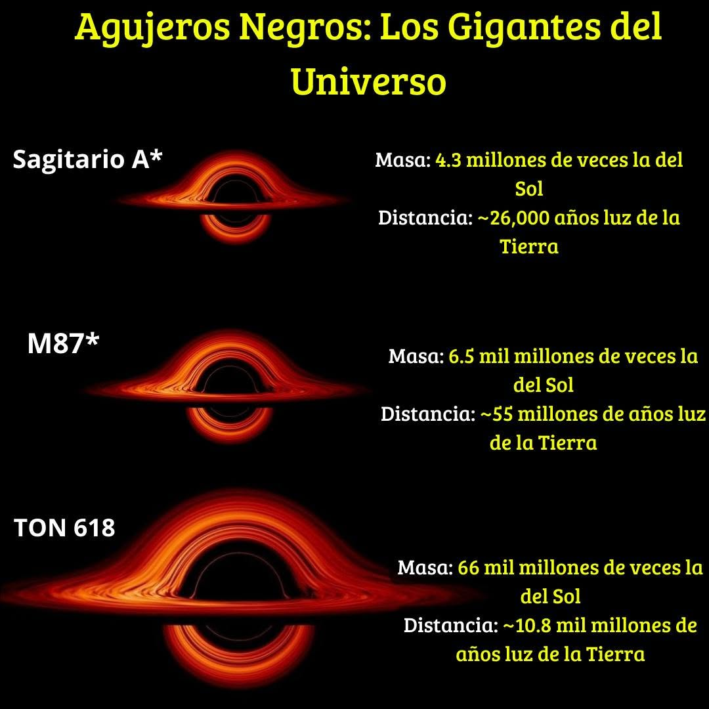

Agujeros Negros
La gravedad extrema deforma el espacio y el tiempo

Es la unica foto real que se tomo en 2019 a un agujero negro con un aro rojo y solo es posible verlo ya que esta "comiendo" toda esa materia que tiene alrededor y ya que en un agujero negro nada tiene la posibilidad de escapar de su gravedad(alcanzando cierto umbral) ni siqueira la luz, esto significa que ningun objeto que entre en su campo de accion podra salir ya sea que vaya a la velocidad de la luz que son unos 300,000 km/s en la imgaen se logra ver ese vacio negro del centro